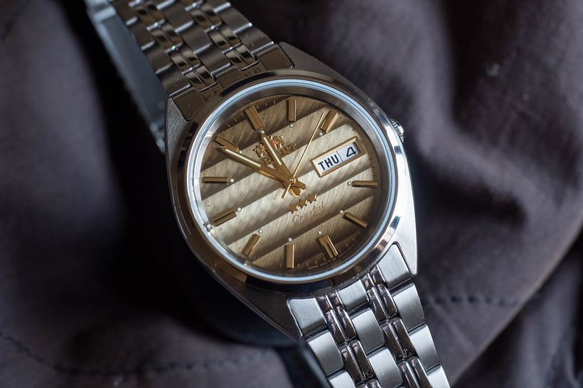
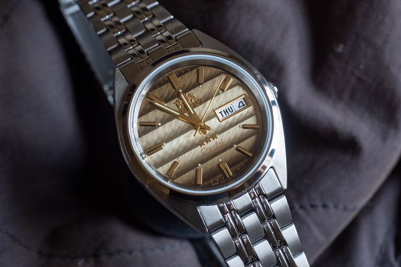
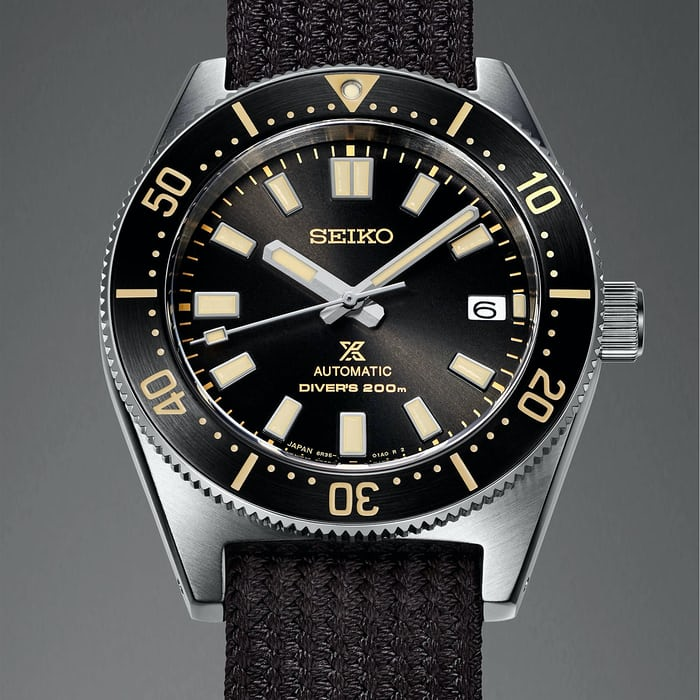
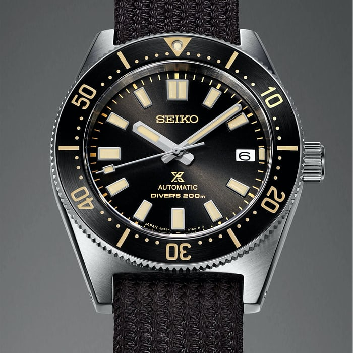

There are many different types of watch brands. I have chosen some that of the most prevelant brands and brands that I enjoy. Some of these brands are very expensive, while others are very affordable.


 

 



**Need to add a short description for all of the brands*** Expensive Brands AP (Audemars Piguet) | Can cost $100,000 + Grand Seiko | Can cost $5000 + Omega | Can cost $4000 Rolex | Can cost $10,000+ Tudor | Can cost $4000+ Oris | Can cost $3000+ Affordable Brands Casio | Can be less than $100 Orient | Can be less than $100 Timex | Can be less than $100 Regardless of the price of the watch, they all do the same thing: tell time.
Image credits ap: https://www.hodinkee.com/articles/our-favorite-new-watches-of-2021 Casio: https://www.hodinkee.com/articles/casio-ae1500-value-proposition Grand Seiko: https://www.hodinkee.com/articles/top-10-most-popular-hodinkee-posts-of-the-decade Omega: https://www.hodinkee.com/articles/our-favorite-new-watches-of-2021 Orient: https://www.hodinkee.com/articles/we-each-had-dollar100-to-spend-on-a-watch-heres-what-we-got Oris: https://www.hodinkee.com/articles/our-favorite-new-watches-of-2021 Rolex: https://www.hodinkee.com/articles/our-favorite-new-watches-of-2021 Seiko: https://www.hodinkee.com/articles/our-favorite-new-watches-of-2021 Timex: https://www.hodinkee.com/articles/we-each-had-dollar100-to-spend-on-a-watch-heres-what-we-got Tudor: https://www.hodinkee.com/articles/our-favorite-new-watches-of-2021 Person3: https://unsplash.com/photos/rKoZ7RYfn5E